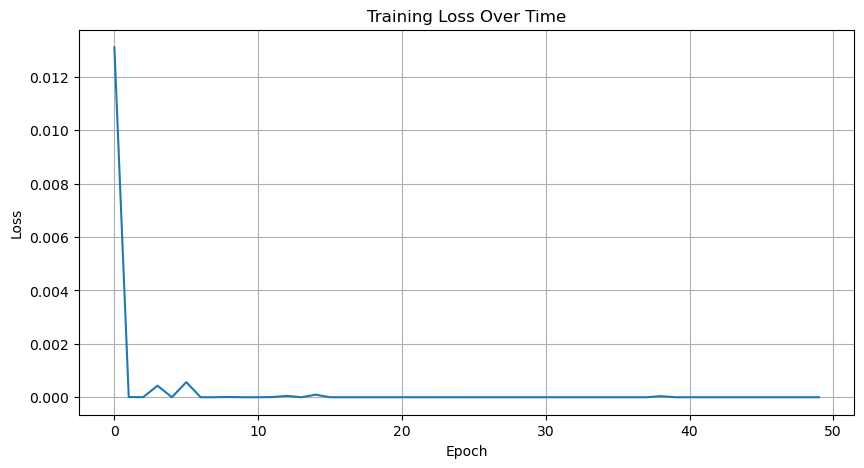
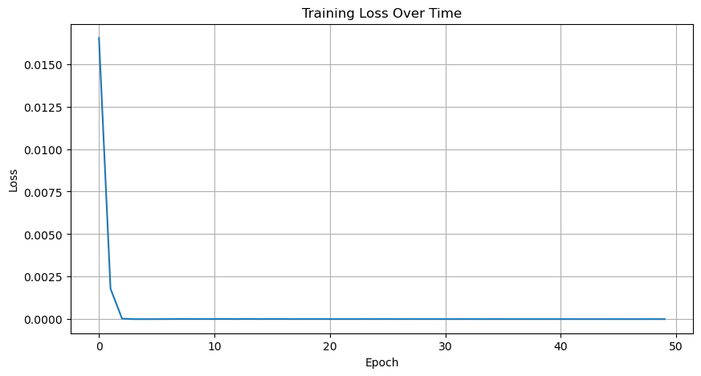
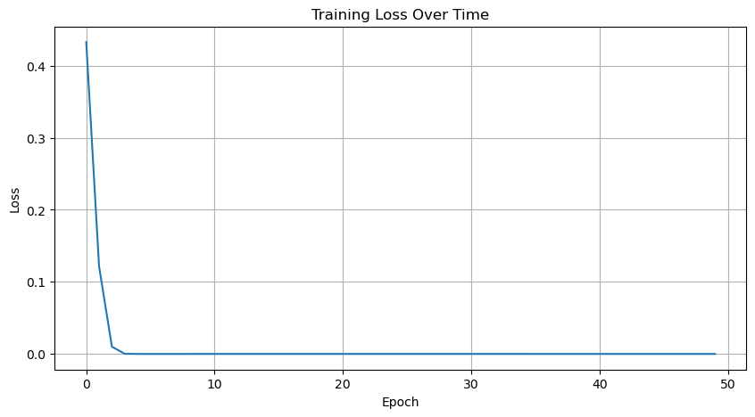
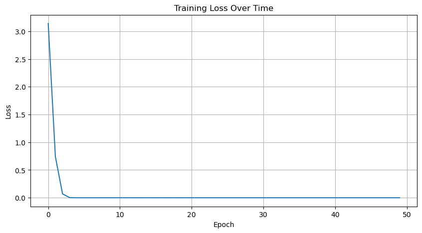
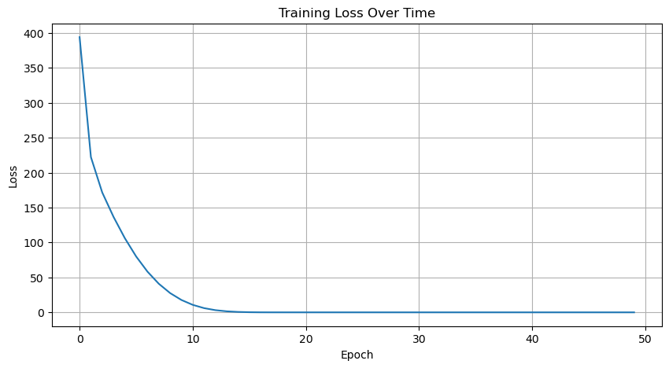
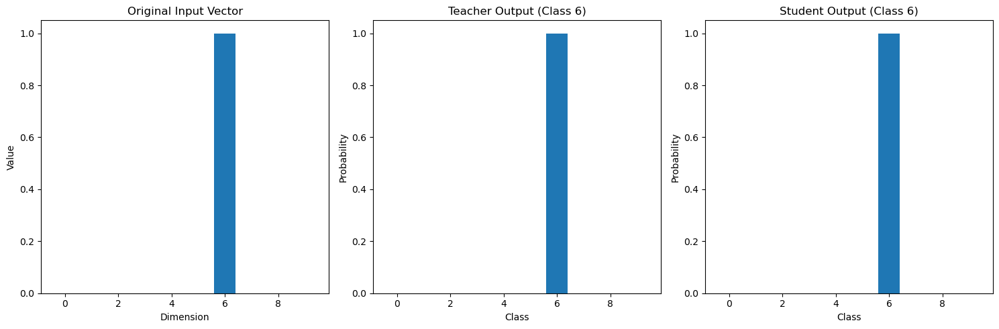

import torch
import numpy as np
import matplotlib.pyplot as pltclass Autoencoder(torch.nn.Module):
def __init__(self, input_dim=10, hidden_dim=256, dropout_rate=0.25):
super().__init__()
# Encoder
self.encoder = torch.nn.Sequential(
torch.nn.Linear(input_dim, hidden_dim),
torch.nn.ReLU(),
torch.nn.Dropout(p=dropout_rate),
torch.nn.Linear(hidden_dim, hidden_dim),
torch.nn.ReLU(),
torch.nn.Dropout(p=dropout_rate)
)
# Decoder
self.decoder = torch.nn.Sequential(
torch.nn.Linear(hidden_dim, hidden_dim),
torch.nn.ReLU(),
torch.nn.Dropout(p=dropout_rate),
torch.nn.Linear(hidden_dim, input_dim),
torch.nn.Softmax(dim=1) # For one-hot encoded output
)
def forward(self, x):
encoded = self.encoder(x)
decoded = self.decoder(encoded)
return decoded
teacher_dim = 512
student_dim = 16
# Create model instance
autoencoder = Autoencoder(hidden_dim = teacher_dim, dropout_rate=0.5)
student_autoencoder = Autoencoder(hidden_dim=student_dim, dropout_rate=0.0)# Generate some random one-hot encoded data for training
num_samples = 1000
input_dim = 10
X = torch.zeros(num_samples, input_dim)
X[torch.arange(num_samples), torch.randint(0, input_dim, (num_samples,))] = 1
# Training parameters
criterion = torch.nn.MSELoss()
optimizer = torch.optim.Adam(autoencoder.parameters(), lr=0.001)
num_epochs = 50
# Lists to store losses for plotting
losses = []
from tqdm import tqdm
# Training loop
for epoch in range(num_epochs):
# Create TQDM progress bar for each epoch
pbar = tqdm(range(num_samples), desc=f'Epoch {epoch+1}/{num_epochs}')
epoch_loss = 0
for i in pbar:
# Get a batch (in this case single sample)
x = X[i:i+1]
# Forward pass
output = autoencoder(x)
loss = criterion(x, output)
# Backward pass and optimize
optimizer.zero_grad()
loss.backward()
optimizer.step()
# Update metrics
epoch_loss += loss.item()
current_loss = epoch_loss / (i + 1)
# Update progress bar
pbar.set_postfix({'loss': f'{current_loss:.4f}', 'lr': f"{optimizer.param_groups[0]['lr']:.6f}"})
for param_group in optimizer.param_groups:
param_group['lr'] *= 0.99
# Store average loss for plotting
losses.append(epoch_loss / num_samples)
# Plot the training loss
plt.figure(figsize=(10, 5))
plt.plot(losses)
plt.title('Training Loss Over Time')
plt.xlabel('Epoch')
plt.ylabel('Loss')
plt.grid(True)
plt.show()Epoch 1/50: 100%|██████████| 1000/1000 [00:03<00:00, 299.93it/s, loss=0.0131, lr=0.001000]
Epoch 2/50: 100%|██████████| 1000/1000 [00:02<00:00, 335.00it/s, loss=0.0000, lr=0.000990]
Epoch 3/50: 100%|██████████| 1000/1000 [00:06<00:00, 164.86it/s, loss=0.0000, lr=0.000980]
Epoch 4/50: 100%|██████████| 1000/1000 [00:03<00:00, 326.19it/s, loss=0.0004, lr=0.000970]
Epoch 5/50: 100%|██████████| 1000/1000 [00:02<00:00, 337.50it/s, loss=0.0000, lr=0.000961]
Epoch 6/50: 100%|██████████| 1000/1000 [00:02<00:00, 345.12it/s, loss=0.0006, lr=0.000951]
Epoch 7/50: 100%|██████████| 1000/1000 [00:02<00:00, 336.68it/s, loss=0.0000, lr=0.000941]
Epoch 8/50: 100%|██████████| 1000/1000 [00:02<00:00, 336.29it/s, loss=0.0000, lr=0.000932]
Epoch 9/50: 100%|██████████| 1000/1000 [00:02<00:00, 341.82it/s, loss=0.0000, lr=0.000923]
Epoch 10/50: 100%|██████████| 1000/1000 [00:03<00:00, 321.34it/s, loss=0.0000, lr=0.000914]
Epoch 11/50: 100%|██████████| 1000/1000 [00:03<00:00, 328.74it/s, loss=0.0000, lr=0.000904]
Epoch 12/50: 100%|██████████| 1000/1000 [00:02<00:00, 336.65it/s, loss=0.0000, lr=0.000895]
Epoch 13/50: 100%|██████████| 1000/1000 [00:03<00:00, 328.22it/s, loss=0.0000, lr=0.000886]
Epoch 14/50: 100%|██████████| 1000/1000 [00:06<00:00, 162.51it/s, loss=0.0000, lr=0.000878]
Epoch 15/50: 100%|██████████| 1000/1000 [00:03<00:00, 331.52it/s, loss=0.0001, lr=0.000869]
Epoch 16/50: 100%|██████████| 1000/1000 [00:03<00:00, 321.31it/s, loss=0.0000, lr=0.000860]
Epoch 17/50: 100%|██████████| 1000/1000 [00:02<00:00, 339.03it/s, loss=0.0000, lr=0.000851]
Epoch 18/50: 100%|██████████| 1000/1000 [00:03<00:00, 319.38it/s, loss=0.0000, lr=0.000843]
Epoch 19/50: 100%|██████████| 1000/1000 [00:03<00:00, 329.59it/s, loss=0.0000, lr=0.000835]
Epoch 20/50: 100%|██████████| 1000/1000 [00:02<00:00, 337.87it/s, loss=0.0000, lr=0.000826]
Epoch 21/50: 100%|██████████| 1000/1000 [00:02<00:00, 341.59it/s, loss=0.0000, lr=0.000818]
Epoch 22/50: 100%|██████████| 1000/1000 [00:02<00:00, 341.15it/s, loss=0.0000, lr=0.000810]
Epoch 23/50: 100%|██████████| 1000/1000 [00:03<00:00, 320.03it/s, loss=0.0000, lr=0.000802]
Epoch 24/50: 100%|██████████| 1000/1000 [00:06<00:00, 164.87it/s, loss=0.0000, lr=0.000794]
Epoch 25/50: 100%|██████████| 1000/1000 [00:03<00:00, 330.12it/s, loss=0.0000, lr=0.000786]
Epoch 26/50: 100%|██████████| 1000/1000 [00:03<00:00, 324.89it/s, loss=0.0000, lr=0.000778]
Epoch 27/50: 100%|██████████| 1000/1000 [00:03<00:00, 328.03it/s, loss=0.0000, lr=0.000770]
Epoch 28/50: 100%|██████████| 1000/1000 [00:02<00:00, 345.71it/s, loss=0.0000, lr=0.000762]
Epoch 29/50: 100%|██████████| 1000/1000 [00:02<00:00, 343.50it/s, loss=0.0000, lr=0.000755]
Epoch 30/50: 100%|██████████| 1000/1000 [00:02<00:00, 334.82it/s, loss=0.0000, lr=0.000747]
Epoch 31/50: 100%|██████████| 1000/1000 [00:02<00:00, 333.42it/s, loss=0.0000, lr=0.000740]
Epoch 32/50: 100%|██████████| 1000/1000 [00:02<00:00, 338.64it/s, loss=0.0000, lr=0.000732]
Epoch 33/50: 100%|██████████| 1000/1000 [00:02<00:00, 340.28it/s, loss=0.0000, lr=0.000725]
Epoch 34/50: 100%|██████████| 1000/1000 [00:02<00:00, 334.21it/s, loss=0.0000, lr=0.000718]
Epoch 35/50: 100%|██████████| 1000/1000 [00:05<00:00, 168.22it/s, loss=0.0000, lr=0.000711]
Epoch 36/50: 100%|██████████| 1000/1000 [00:02<00:00, 342.94it/s, loss=0.0000, lr=0.000703]
Epoch 37/50: 100%|██████████| 1000/1000 [00:02<00:00, 346.37it/s, loss=0.0000, lr=0.000696]
Epoch 38/50: 100%|██████████| 1000/1000 [00:02<00:00, 342.25it/s, loss=0.0000, lr=0.000689]
Epoch 39/50: 100%|██████████| 1000/1000 [00:02<00:00, 352.28it/s, loss=0.0000, lr=0.000683]
Epoch 40/50: 100%|██████████| 1000/1000 [00:02<00:00, 352.13it/s, loss=0.0000, lr=0.000676]
Epoch 41/50: 100%|██████████| 1000/1000 [00:02<00:00, 359.54it/s, loss=0.0000, lr=0.000669]
Epoch 42/50: 100%|██████████| 1000/1000 [00:02<00:00, 351.75it/s, loss=0.0000, lr=0.000662]
Epoch 43/50: 100%|██████████| 1000/1000 [00:02<00:00, 342.73it/s, loss=0.0000, lr=0.000656]
Epoch 44/50: 100%|██████████| 1000/1000 [00:02<00:00, 337.22it/s, loss=0.0000, lr=0.000649]
Epoch 45/50: 100%|██████████| 1000/1000 [00:02<00:00, 340.09it/s, loss=0.0000, lr=0.000643]
Epoch 46/50: 100%|██████████| 1000/1000 [00:06<00:00, 164.33it/s, loss=0.0000, lr=0.000636]
Epoch 47/50: 100%|██████████| 1000/1000 [00:03<00:00, 333.29it/s, loss=0.0000, lr=0.000630]
Epoch 48/50: 100%|██████████| 1000/1000 [00:03<00:00, 330.46it/s, loss=0.0000, lr=0.000624]
Epoch 49/50: 100%|██████████| 1000/1000 [00:03<00:00, 330.51it/s, loss=0.0000, lr=0.000617]
Epoch 50/50: 100%|██████████| 1000/1000 [00:02<00:00, 343.38it/s, loss=0.0000, lr=0.000611]
def record_transforms(modules, inputs:torch.Tensor):
assert len(inputs.shape) == 2, f"Expected inputs to be 2-dimensional, got shape {inputs.shape}"
with torch.no_grad():
return torch.nn.Sequential(*modules)(inputs)
def imitation_training(student_modules, student_output_dim:int, teacher_output_dim:int, inputs:torch.Tensor, expected_outputs:torch.Tensor, criterion, adapt_dimensions=True):
n_epochs = 50
student_ = torch.nn.Sequential(
*student_modules,
*([] if not adapt_dimensions else [torch.nn.Linear(student_output_dim, teacher_output_dim)])
)
optimizer = torch.optim.Adam(student_.parameters())
losses = []
from tqdm.notebook import tqdm
num_samples = inputs.shape[0]
for epoch in range(n_epochs):
# Create TQDM progress bar for each epoch
pbar = tqdm(range(num_samples), desc=f'Epoch {epoch+1}/{n_epochs}')
epoch_loss = 0
for i in pbar:
x = inputs[i, :].unsqueeze(0)
#print(x.shape)
student_output = student_(x)
with torch.no_grad():
teacher_output = expected_outputs[i, :].unsqueeze(0)
loss = criterion(student_output, teacher_output)
optimizer.zero_grad()
loss.backward()
optimizer.step()
epoch_loss += loss.item()
pbar.set_postfix({'loss': f'{loss.item():.4f}', 'lr': f"{optimizer.param_groups[0]['lr']:.6f}"})
# Adjust learning rate every 1000 steps
if (i + 1) % 1000 == 0:
for param_group in optimizer.param_groups:
param_group['lr'] = max(param_group['lr'] * 0.99, 1e-7)
losses.append(epoch_loss / num_samples)
# Plot the losses
import matplotlib.pyplot as plt
plt.figure(figsize=(10, 5))
plt.plot(losses)
plt.title('Training Loss Over Time')
plt.xlabel('Epoch')
plt.ylabel('Loss')
plt.grid(True)
plt.show()
num_samples = 1000
input_dim = 10
X = torch.zeros(num_samples, input_dim)
X[torch.arange(num_samples), torch.randint(0, input_dim, (num_samples,))] = 1
X.shapetorch.Size([1000, 10])autoencoder.eval()Autoencoder(
(encoder): Sequential(
(0): Linear(in_features=10, out_features=512, bias=True)
(1): ReLU()
(2): Dropout(p=0.5, inplace=False)
(3): Linear(in_features=512, out_features=512, bias=True)
(4): ReLU()
(5): Dropout(p=0.5, inplace=False)
)
(decoder): Sequential(
(0): Linear(in_features=512, out_features=512, bias=True)
(1): ReLU()
(2): Dropout(p=0.5, inplace=False)
(3): Linear(in_features=512, out_features=10, bias=True)
(4): Softmax(dim=1)
)
)# Set dropout probability to 0
for module in autoencoder.modules():
if isinstance(module, torch.nn.Dropout):
module.p = 0.0
for module in student_autoencoder.modules():
if isinstance(module, torch.nn.Dropout):
module.p = 0.0block_1_inputs = X
block_1_expected_outputs = record_transforms([autoencoder.encoder[0], autoencoder.encoder[1]], block_1_inputs)
block_1_expected_outputs.shapetorch.Size([1000, 512])imitation_training(
[student_autoencoder.encoder[0], student_autoencoder.encoder[1]],
student_dim,
teacher_dim,
block_1_inputs,
block_1_expected_outputs,
torch.nn.MSELoss()
)
block_2_inputs = record_transforms([student_autoencoder.encoder[0], student_autoencoder.encoder[1],], X)
intermediate_shit = record_transforms([autoencoder.encoder[0], autoencoder.encoder[1] ], X)
#intermediate_shit = torch.randn_like(intermediate_shit)
block_2_expected_outputs = record_transforms([ autoencoder.encoder[2], autoencoder.encoder[3]], block_1_expected_outputs)
#block_2_expected_outputs = torch.ones_like(block_2_expected_outputs)block_2_inputs.shape, block_2_expected_outputs.shape(torch.Size([1000, 16]), torch.Size([1000, 512]))imitation_training(
[student_autoencoder.encoder[2], student_autoencoder.encoder[3]],
student_dim,
teacher_dim,
block_2_inputs,
block_2_expected_outputs,
torch.nn.MSELoss()
)
block_3_inputs = record_transforms([ student_autoencoder.encoder[0], student_autoencoder.encoder[1], student_autoencoder.encoder[2], student_autoencoder.encoder[3],], X)
#block_3_expected_outputs = record_transforms([ autoencoder.encoder[0], autoencoder.encoder[1],autoencoder.encoder[2], autoencoder.encoder[3], autoencoder.decoder[0], autoencoder.decoder[1]], X)
block_3_expected_outputs = record_transforms([ autoencoder.decoder[0], autoencoder.decoder[1]], block_2_expected_outputs)imitation_training(
[student_autoencoder.decoder[0], student_autoencoder.decoder[1]],
student_dim,
teacher_dim,
block_3_inputs,
block_3_expected_outputs,
torch.nn.MSELoss()
)
block_4_inputs = record_transforms([ student_autoencoder.encoder[0], student_autoencoder.encoder[1], student_autoencoder.encoder[2], student_autoencoder.encoder[3], student_autoencoder.decoder[0], student_autoencoder.decoder[1] ], X)
#block_4_expected_outputs = record_transforms([ autoencoder.encoder[0], autoencoder.encoder[1],autoencoder.encoder[2], autoencoder.encoder[3], autoencoder.decoder[0], autoencoder.decoder[1], autoencoder.decoder[2], autoencoder.decoder[3]], X)
# Get min and max values from block_3_expected_outputs
block_4_expected_outputs = record_transforms([autoencoder.decoder[2], autoencoder.decoder[3]], block_3_expected_outputs)block_4_inputs.shape, block_4_expected_outputs.shape(torch.Size([1000, 16]), torch.Size([1000, 10]))with torch.no_grad():
torch.nn.Sequential(student_autoencoder.decoder[2], student_autoencoder.decoder[3])(block_4_inputs[0, :].unsqueeze(0))imitation_training(
[student_autoencoder.decoder[2], student_autoencoder.decoder[3]],
student_dim,
10,
block_4_inputs,
block_4_expected_outputs,
torch.nn.MSELoss(),
#torch.nn.CrossEntropyLoss(),
False
)
# Compare teacher and student outputs
with torch.no_grad():
teacher_output = autoencoder(X)
student_output = student_autoencoder(X)
# Get predicted classes
teacher_pred = torch.argmax(teacher_output, dim=1)
student_pred = torch.argmax(student_output, dim=1)
# Calculate accuracy
correct = (teacher_pred == student_pred).sum().item()
total = len(X)
accuracy = correct / total * 100
print(f"Accuracy between teacher and student predictions: {accuracy:.2f}%")
print(f"Correct predictions: {correct}/{total}")
# Print shapes for debugging
print("Input shape:", X.shape)
print("Teacher output shape:", teacher_output.shape)
print("Student output shape:", student_output.shape)
# Visualize sample outputs as bar plots since we have 10-dimensional vectors
plt.figure(figsize=(15, 5))
# Choose a random sample index
sample_idx = np.random.randint(0, len(X))
print(f"Showing random sample: {sample_idx}")
print(f"Teacher predicted class: {teacher_pred[sample_idx].item()}")
print(f"Student predicted class: {student_pred[sample_idx].item()}")
# Original input
plt.subplot(1, 3, 1)
plt.bar(range(10), X[sample_idx].cpu().numpy())
plt.title('Original Input Vector')
plt.xlabel('Dimension')
plt.ylabel('Value')
# Teacher reconstruction
plt.subplot(1, 3, 2)
plt.bar(range(10), teacher_output[sample_idx].cpu().numpy())
plt.title(f'Teacher Output (Class {teacher_pred[sample_idx].item()})')
plt.xlabel('Class')
plt.ylabel('Probability')
# Student reconstruction
plt.subplot(1, 3, 3)
plt.bar(range(10), student_output[sample_idx].cpu().numpy())
plt.title(f'Student Output (Class {student_pred[sample_idx].item()})')
plt.xlabel('Class')
plt.ylabel('Probability')
plt.tight_layout()
plt.show()Accuracy between teacher and student predictions: 100.00%
Correct predictions: 1000/1000
Input shape: torch.Size([1000, 10])
Teacher output shape: torch.Size([1000, 10])
Student output shape: torch.Size([1000, 10])
Showing random sample: 200
Teacher predicted class: 6
Student predicted class: 6
# Evaluate teacher model accuracy by comparing predicted classes
teacher_pred = torch.argmax(teacher_output, dim=1)
input_pred = torch.argmax(X, dim=1)
correct = (teacher_pred == input_pred).sum().item()
total = len(X)
accuracy = correct / total * 100
print(f"Teacher model accuracy: {accuracy:.2f}%")
print(f"Correct predictions: {correct}/{total}")
# Print shapes for debugging
print("\nInput shape:", X.shape)
print("Teacher output shape:", teacher_output.shape)Teacher model accuracy: 100.00%
Correct predictions: 1000/1000
Input shape: torch.Size([1000, 10])
Teacher output shape: torch.Size([1000, 10])